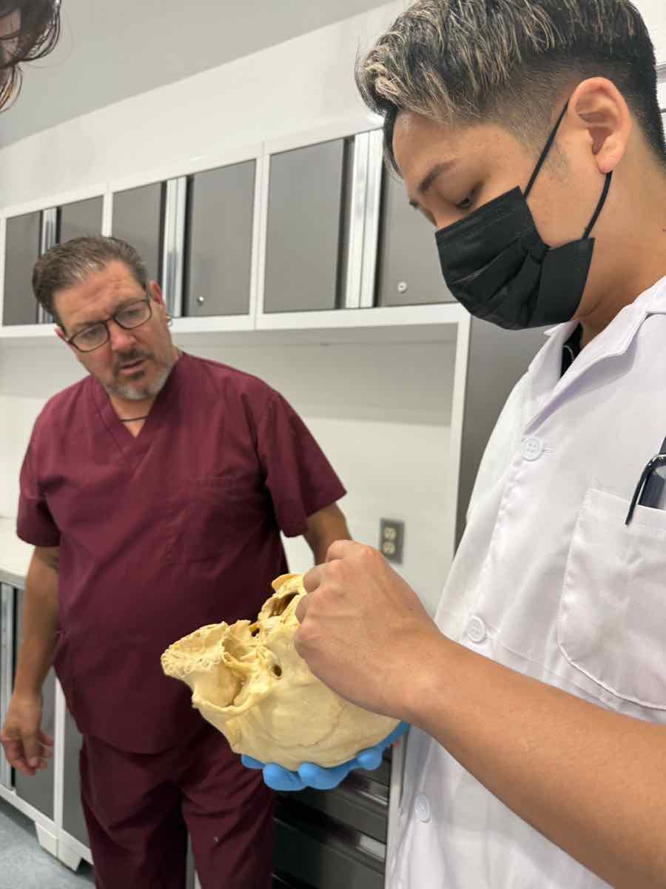
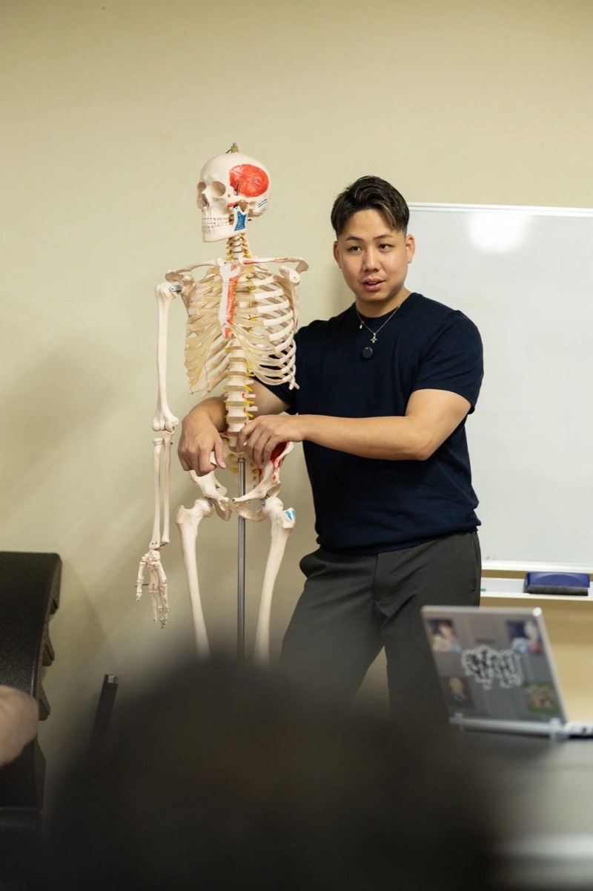

Philosophy
理念・思想
協会がなぜ生まれ、何を大切にしていくのか。
これまでの活動の事実と、これからの意志を分けてお伝えします。
01 — Background
設立の背景

これまでの活動
創設者・原口慶篤は、パーソナルトレーナー兼整体師として12年以上、施術と運動指導の現場に立ってきました。TOTAL BODY FITNESS THEORY、零-ZERO-、零式という名称で、ボディメイク、姿勢改善、技術教育、専門家向けのセミナー、企業研修を行っています。
その中で、解剖学・生理学・神経系・運動の視点と、関節調整、オステオパシー、経絡、頭部・内臓へのアプローチを組み合わせた12のコンテンツを開発してきました。
これから取り組むこと
技術を開発し、教える人が一人のままでは、届けられる範囲に限りがあります。現場で培った技術を、学び、実践し、次の人へ伝えられる形にする。そのための受け皿として、コンディショニングジャパン協会の設立準備を進めています。
学ぶ人にとっては、知識や技術にふれやすい環境を。教える人にとっては、共通の基準と学び直しの場を。両方を整えることを目指します。
Purpose / Mission / Vision / Value
協会の理念
以下は正式決定前の原稿案です。
- Purpose存在意義
現場で培った技術を、学び、実践し、次の人へ伝えられる形にする。
一人の経験に閉じていた技術を、手順と言葉にし、受け継げるものにします。
- Mission使命
施術と運動をつなぐ学びを通じて、現場で考え、実践し、伝えられる専門家を育てる。
評価から介入、再評価までを一つの流れとして学び、自分の言葉で説明できる人を増やします。
- Vision目指す姿
身体に関わる専門職が、地域や立場を越えて、同じ基準で学び合える状態をつくる。
各地で講座を担える講師を育て、学びたい人が学べる場所を広げていきます。
- Value大切にすること
-
確かめる
やったことの結果を、評価で確かめる。変化がなければ、そのことも受け止めます。
つなげる
部分だけでなく全体の関係を見て、施術を動作や運動へつなげます。
伝わる形にする
感覚で終わらせず、手順と言葉にして、相手が再び行える形で伝えます。
学び直す
知識も技術も説明も、新しい学びに合わせて更新し続けます。

Change
教育を通じて
変えていきたいこと
- 技術を学んでも、自分の現場でどう使うか迷ってしまう状態から、評価にもとづいて選べる状態へ。
- 「なんとなく良くなった」から、何をして、何が変わったかを説明できる状態へ。
- 施術と運動指導が別々に語られる状態から、一つの流れとして設計できる状態へ。
- 一人で学び続ける状態から、共通の基準を持つ仲間と学び直せる状態へ。
Message
創設者メッセージ
私自身、多くの時間と費用をかけて学んできました。だからこそ、もっと知識や技術にふれやすい環境があってもいいと考えています。
ただ、技術は「知っている」だけでは現場で役に立ちません。評価し、手を動かし、結果を確かめ、相手に伝わる言葉で説明する。そこまでを一緒に練習できる場をつくりたいと思っています。
そして、その技術を受け取った人が、次は誰かに教える側に立つ。そうやって技術がつながっていく仕組みを、この協会で形にしていきます。
コンディショニングジャパン協会 創設者原口 慶篤